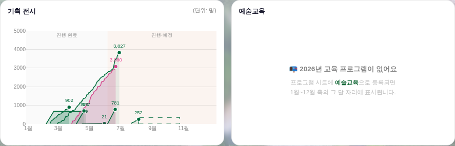
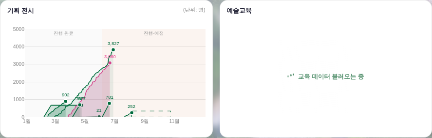
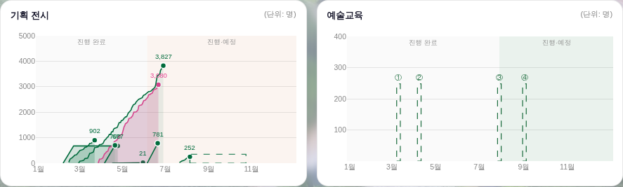
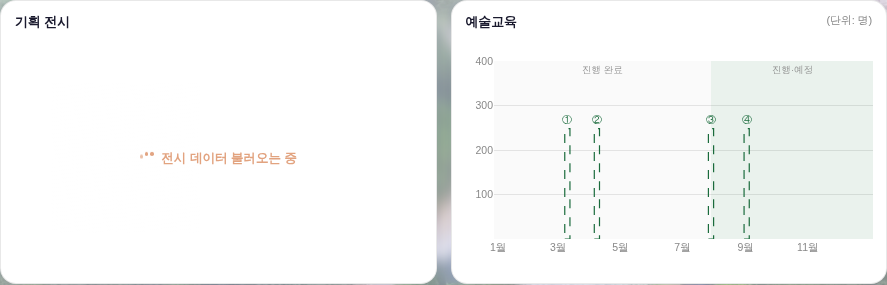
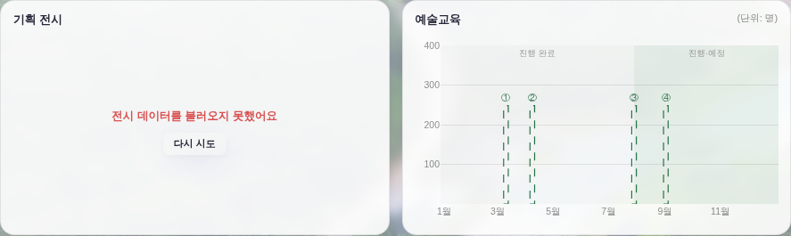

대시보드 3면 좌 열 하단 반반 줄(_bizCompRender) · 운영자 지시 260808
「전시랑 교육 부분이 처음에 로딩될 때 오류처럼 나온다 · 바로 못 받아오면 로딩처럼 뜨게」 ·
화면 = 결정적 목데이터(tools/qa_mock_ops.mjs) ?qa=admin 경로 + 목 API 지연 셔틀 · 실API·실데이터·PII 미접촉.
두 반쪽의 소스는 서로 다르고 도착 시각도 다르다. 교육 반쪽은 도착 여부를 아예 묻지 않아, 안 온 상태를 없는 상태로 단정했다.
| 반쪽 | 소스 | 전 — 미도착일 때 화면 | 후 |
|---|---|---|---|
| 기획 전시 | _anaState._exMaster(전시마스터·전시일일) |
로딩 스윕 있음 — 다만 fetch가 실패해도 로딩이 그대로 남아 영원히 「불러오는 중」 | 미도착 = 로딩 유지 · 실패 = 실패 카드 + 「다시 시도」 |
| 예술교육 | PERFS(프로그램 시트) |
📭 2026년 교육 프로그램이 없어요 + 「프로그램 시트에 예술교육으로 등록되면…」 안내문 |
전시와 같은 로더 부품 — 교육 데이터 불러오는 중 |
같은 타임라인 지점에서 잡은 두 컷. 전시는 이미 도착해 그려졌고, 교육(PERFS)은 아직 오는 중인 순간이다. 재현 조건 = 프로그램 시트 3.2s / 운영대장·전시 2시트 0.9s (프로그램 시트가 가장 큰 시트라 실제로 늦게 오는 순서).


도착 뒤(≈3.6s)는 전·후가 동일하다 — 월별 일정 게이지 ①②③④.

전시 원천 2시트가 실패하는 조건(각 fetch가 .catch → null). 구판은 실패해도 _bizExhibEnsure가 조용히 빠져나가
로더가 그대로 남았다 — 코드 주석엔 「불러오지 못했어요로 남는다」라고 적혀 있었지만 그 상태가 실제로는 없었다.


window._bizmExFail)가 서 있으면
자동 재확보를 멈춘다. 재확보는 「다시 시도」를 누를 때만. 실측 호출 수 = 전시마스터·전시일일 각 2회(레일 6시트 1 + 반쪽 자체 확보 1)로 유한.| 자리 | 내용 |
|---|---|
| _bizEduMonthRows() | !_perfReady면 null 반환 — 전시 반쪽(_bizExhibRows)과 같은 「미로드 = null」 계약으로 통일.
판매 레일이 이미 지는 규약과 같은 축(_perfReady 게이트 · 「master 도착 전에는 '없어요' 확정 금지」). |
| _bizHalfLoad() 신설 | 반반 카드 공용 로더 — 구 전시 반쪽 인라인 문자열을 그대로 뽑았다(마크업 동일 = 전시 쪽 회귀 0).
기틀 §2-13 로딩 표준: .sk-sweep 빔 + _ldHtml(14) + 「~중」(말줄임 점 금지).
잉크만 분야색으로 갈린다 — 전시 var(--peach-text) · 교육 var(--green). 신규 색·신규 토큰 0. |
| _bizHalfFail() 신설 | 반반 카드 공용 실패 카드 — 이 파일의 정본 실패 문법 계승(var(--danger) 문구 + .ana-chip 「다시 시도」 ·
_bizCompRender 운영대장 실패 경로와 같은 부품). |
| _bizExhibEnsure() | 못 받으면 window._bizmExFail=1을 세우고 그 면을 다시 그린다(구판은 딱지 없이 return = 무한 로딩).
받으면 딱지를 걷는다. 호출측은 딱지가 서 있으면 자동 재확보를 멈춘다. |
| initApp() loadPrograms .then | 프로그램 시트 도착 = 교육 반쪽의 유일한 해제 신호라, 레일 재렌더 경로가 안 탔을 때만 _bizInlineRender()를 보탠다(이중 렌더 0). |
| 게이트 | 결과 |
|---|---|
| python3 tools/check_design.py | PASS — raw hex 1578/1578 · :root 2/0 · 고아 9(기존) · 이중정의 1(기존) (증가 0) |
| npm run check | PASS — check_refs · _YR 정합(연도 2012~2026 · 누계 1,523,323) |
| npm run smoke:layout (1920×1080) | PASS — 이젤·흰 라인 계약 유지(박스 Δ0 · 흰 카드 하단 Δ0 · 안선 밀착 · 흔들림 0) |
| node tools/smoke_layout.mjs 1366 768 | PASS — 좁은 폭도 동일 |
| npm run smoke | PASS — 로그인 렌더·핵심 함수·JS 회귀 0 |
| 헤드리스 pageerror | 0건 — 전 시나리오(교육 레이스·전시 실패·정상) |
tools/smoke_layout.mjs)는 FEED_SCRIPT가 _perfReady·전시 캐시를 선점해 채우므로
이 레이스 구간을 애초에 지나가지 않는다 — 그래서 이 결함이 게이트를 통과한 채 살아 있었다.